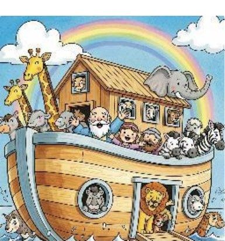
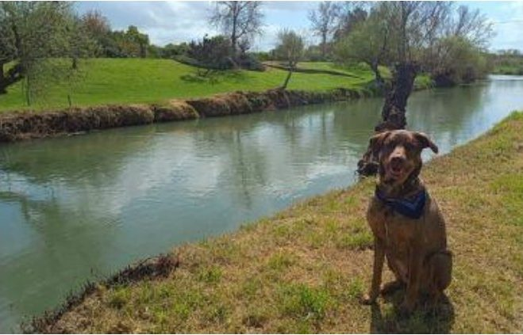
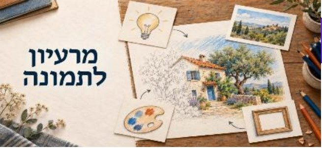
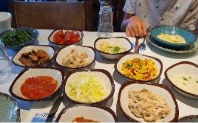

שבת שלום חברות וחברים, מה היה לנו השבוע?
אנחנו שבוע וחצי לפני הבחירות, הקמפיינים בעיצומם, הכותרות עסוקות בכל מיני סיפורים – אבל יש נושא אחד שמשום מה לא מצליח להיכנס לכותרות, למרות שהוא מעניין ונוגע בכיס של כל אחד מאיתנו: יוקר המחיה בישראל.
יוקר המחיה בישראל כבר לא "קצת יקר" – הוא פשוט רודף אחרינו לכל מקום. בסופר, בתחנת הדלק, בחנות הבגדים, ואפילו בחו"ל כשאתה קונה משהו ופתאום נזכר ומתעצבן כמה יקר זה עולה אצלנו.
להמשך קריאה
רוב המשפחות כבר מרגישות שהמשכורת מגיעה בעיקר כדי לשלם על הדברים שאי אפשר לוותר עליהם, ומה שנשאר בסוף החודש מספיק בעיקר בשביל לנשום עמוק ולקוות ששום דבר לא יישבר. אז בדקנו עבורכם מה מציעים לנו הנבחרים הפוטנציאליים כדי להפוך את החיים לקצת פחות יקרים (או לפחות לקצת פחות כואבים):
ישר! (איזנקוט)
דיור ותחבורה: "בוא נבנה מהר יותר במקומות שאנשים באמת רוצים לגור", ניתן עדיפות להתחדשות עירונית עם ממ"דים, ונשפוך כסף על תחבורה ציבורית.
מזון וחינוך: נפתח את השוק ליבוא מקביל (כי למה שאנחנו נהיה יותר יקרים מאירופה?), נכריח מונופולים להיות שקופים ברווחים, ונסבסד חינוך לגיל הרך – אבל רק להורים שעובדים ומשרתים. כלומר: עובדים? משרתים? מגיע לכם. השאר? תסתדרו.
הדמוקרטים (יאיר גולן)
שכר ודיור: נעלה בהדרגה את שכר המינימום, נרחיב את מענק העבודה, נקים רשות ממשלתית לדיור בר-השגה, ונחוקק חוק שכירות הוגנת (כי כרגע השכירות בישראל זה בעיקר "הוגן לבעל הדירה").
מזון ותחרות: נפרק את התאגידים הגדולים, נכריח אותם למכור חברות-בנות, נעודד הפצה עצמאית, נגדיר בחוק מה זה "מחיר מופרז", ונעשה סדר גם בבנקים ובפנסיה. בקיצור – פחות ענקים, יותר תחרות.
הציונות הדתית
שוק חופשי ומונופולים: לא אוהבים פיקוח מחירים מלא, מעדיפים לפרק מונופולים ומותגים גדולים בשוק המזון ולהגביל נתחי שוק (בסגנון הרפורמה בבנקים).
מה כבר עשינו: בלימת אינפלציה, רפורמת "מה שטוב לאירופה טוב לישראל", והגדלת היצע דיור בפריפריה. כלומר – פחות פיקוח, יותר תחרות, וקצת גאווה על מה שכבר הושג.
ישראל ביתנו (ליברמן)
יבוא ותשתיות: עוד יבוא מקביל לפי תקנים בינלאומיים, ביטול מכסים, נסיעה חינם לפנסיונרים והוזלת תחבורה ציבורית.
דיור ועצמאים: שינוי שיטת שיווק הקרקעות – התחרות תהיה על מי שמסיים מהר יותר ומי שמוכר יותר זול לצרכן. ובנוסף – רשת ביטחון וולונטרית לעצמאים (כי גם הם בני אדם, לא רק עובדים שכירים).
המילואימניקים והכלכלית (הנדל + זליכה)
תגמול למשרתים: עדיפות במעונות, דיור, משכנתאות ומכרזי קרקע למי שעושה מילואים.
יוזמה עסקית: פחות ביורוקרטיה, פחות חסמי יבוא, מסלולים ירוקים להשקעות, ותמיכה בעסקים קטנים ובינוניים + רשת ביטחון חברתית דיפרנציאלית. בקיצור – מי שנושא בנטל, מקבל עדיפות, ומי שרוצה לעשות עסקים – מקבל פחות כאב ראש.
ביחד (בנט)
דיור ומילואים: "ואוצ'ר" של מיליון שקל לרכישת דירה למשרתים פעילים שאין להם דירה, ובנוסף בניית 100 אלף דירות להשכרה ארוכת טווח (40% מהן מסובסדות).
מזון וכשרות: נפרק קטגוריות עודפות אצל יצרנים מונופוליסטיים (לא תוכלו יותר להחזיק כמה מותגים דומיננטיים באותו תחום), ונפתח את שוק הכשרות לתחרות. כי גם כשרות יכולה להיות קצת יותר תחרותית.
ש"ס
בריאות וצרכנות: נמשיך להוריד חסמי יבוא במזון ובתמרוקים, ונוודא שההוזלה באמת מגיעה לצרכן (ולא נשארת אצל מישהו באמצע). בנוסף – צמצום כפל ביטוחים והרחבת חופש הבחירה בבריאות.
שירות לציבור: הקלה ברישוי לעסקים קטנים, יותר סמכויות לרוקחים בקהילה, וקיצור תורים בהתפתחות הילד ובמכון הרפואי לבטיחות בדרכים. כלומר – פחות המתנה, יותר נגישות.
החרדים
כאן הסיפור קצת שונה. לרוב המפלגות החרדיות המסורתיות יוקר המחיה הוא בעיקר "בעיה של אחרים". הן מתמקדות בשמירה על תקציבי ישיבות, קצבאות, דיור למשפחות גדולות ואוטונומיה בחינוך.
המפלגות הערביות
פחות מדברים על "לפרק את המונופולים של תנובה" ויותר על "תנו לנו את החלק שלנו בעוגה".
בקיצור: כמעט כולם מבטיחים לפרק מונופולים, לפתוח יבוא, לבנות דירות ולעזור למי שמשרת. עכשיו נשאר רק לראות מי באמת יצליח להפוך את זה ממצגת יפה לסופר זול יותר. בקרוב נדע אם מישהו פה באמת התכוון להוריד את יוקר המחיה, או שזה רק דיבורים לקמפיין?
מה נגיד? נגמר לנו הכוח. שנהיה בריאים, שנשלם בשקט, ורק שיתנו לנו לחיות בשלום – כי כבר מאסנו במלחמות, ביוקר המחיה, בשקרים והעבודה בעיניים.
השבוע בעצמון ועוד
לחיצה על הכפתור מוסיפה את האירוע ליומן גוגל בטלפון
מהוועד
בקיצור
- הוגשה תביעה נגד היישוב בסך 450,000 ₪ בגין נפילה באחד השבילים. התביעה מטופלת על ידי חברת הביטוח.
- הוועדות מגישות הצעת תקציב ותוכנית עבודה ל-2027 עד 3.11, ומציגות אותן במפגש פתוח לכל התושבים ב-10.11.
- לקראת הפגישה עם רמ"י ב-19.10 הוחלט אילו נושאים לקדם בשלב י"ב.
- הישיבה הבאה: יום שלישי 20.10, 19:30.
פרוטוקול מס' 28 · 13.10.2026
משתתפים: אסנת פולק, יורם קוסטינר, אוה שניידר, טמי באומר, שלומי אקריש.
תביעה נגד היישוב – פגיעה גופנית
הוגשה נגד היישוב תביעה בגין נפילה באחד משבילי היישוב, בסך של 450,000 ₪. התביעה מטופלת על ידי חברת הביטוח. הובהר כי לתביעה עשויות להיות השלכות כספיות על היישוב, לרבות תשלום השתתפות עצמית ועלייה משמעותית בפרמיית הביטוח בשנים הבאות.
משפחת ליבנה – שימוש בשטח ציבורי
השתתפו: אילון ורומי מרינברג ליבנה. בהמשך לבקשת המשפחה לעשות שימוש בשטח ציבורי, הוחלט לאפשר למשפחה להשתמש ברצועת שטח ברוחב של 2–3 מטרים, לצורכי גינון בלבד. הרוחב המדויק ייקבע בתיאום עם המשפחה, לאחר סיור משותף בשטח עם ועדת משק.
הכנת תקציב ותוכניות עבודה לשנת 2027
הוועדות מתבקשות להגיש למזכירות הצעת תקציב ותוכנית עבודה לשנת 2027 עד 3.11.2026. ביום שלישי, 10.11.2026, יציגו הוועדות את בקשות התקציב שלהן במפגש משותף של כלל חברי הוועדות, שיתקיים במועדון היישוב. המפגש יהיה פתוח לכלל חברי היישוב, במטרה לאפשר שקיפות, להציג את תוכניות העבודה ובקשות התקציב ולשתף את הציבור בתהליך. יובהר כי המפגש נועד להצגת התוכניות ולשיח פתוח בלבד, ולא לקבלת החלטות בנוגע לתקציב.
הקפאת חיוב בעת היעדרות מהצהרון
התקבלה פנייה של משפחה בבקשה לקבל פטור מתשלום עבור הצהרון בתקופת היעדרות. בהתאם לתקנון ועדת חינוך, לא ניתן לאשר פטור מתשלום במקרה זה. ועד היישוב מגבה את החלטת ועדת חינוך.
שלב י"ב – היערכות לפגישה עם רמ"י
התקיים דיון לקראת הפגישה עם רשות מקרקעי ישראל, המתוכננת ליום 19.10.2026. הוחלט להעלות בפני רמ"י נושאים ובקשות לקידום הפרויקט:
- קידום הליך השמאות למגרשים.
- הרחבת הגדרת המונח "בן היישוב" ו"בן המקום" (סעיפים 4.5.9 (3+4) בקובץ החלטות מועצת מקרקעי ישראל).
- כנס משתכנים: קביעת מועד הכנס במסגרת תהליך הקליטה והגדרת חובת נוכחות לנרשמים, לצורך היכרות עם היישוב, אופיו ואופן התנהלותו.
- קבלת רשימת המתנה לנרשמים נוספים.
- מועד פרסום המכרז לאחר קבלת היתרים לתוכנית פיתוח התשתיות ותוכנית הדגמים.
- נושאים נוספים שיידרשו לקידום שלב י"ב.
תביעת משפחת סבג גור והיידי – שלב י'
אושרה הצעת המחיר של עו"ד גיורא מיכאלי, אשר יטפל בתביעה שהגישה משפחת סבג גור והיידי נגד היישוב.
מועד הישיבה הבאה
הישיבה הבאה תתקיים ביום שלישי, 20.10.26, בשעה 19:30.
לוח מודעות
איציק פוירשטיין על פרויקט הרכבת הקלה חיפה–נצרת, מגה-פרויקט של הסעת המונים. כולם מוזמנים!
ד"ר אנאבלה שקד על תחרות, יריבות וקנאה, וכמות המריבות. מה מעצים ומה מכשיל בין אחים ואחיות. בקונטיינר.
אוקטובר, חודש המודעות לסרטן השד. חמישה אנשים שעברו מסע אישי של התמודדות והחלמה יפתחו בפנינו את הלב, ויספרו על כוחות, תקווה והחיים שאחרי. ערב של הקשבה, חיבור והשראה, כולו של הקהילה. במוצאי שבת.
16:00–21:00. בני 17 באישור אחד ההורים, בני 18–65 לפי הקריטריונים של בנק הדם, ומעל 65 עם אישור מרופא המשפחה. כולם מוזמנים!
סדרת מפגשי היכרות עם יישובי משגב. בכל מפגש מכירים יישוב דרך סיפורים, סיורים, טעימות ומפגשים אישיים. הפעם בגילון, "בעקבות ראשונים", 09:00–12:00. להרשמה
יציאה מעצמון ב-08:00: איש האפרסמון בעין עירון, בית חנה סנש בשדות ים, ארוחת צהריים ומוזיאון ראלי בקיסריה. חזרה משוערת 16:30.
כולם מוזמנים להשתתף ולהכיר את תוכניות העבודה של הוועדות לשנה הקרובה. במועדון היישוב. נשמח לראותכם!
יוצא לדרך! תשמרו ביומן. פרטים יבואו בהמשך.
תרגול אחרון לתקופה הקרובה! מתאים לכל הרמות והגילאים, בלי ניסיון. 08:30–10:00 בבית משפחת קולר, השחף 443. 50 ₪. להביא מזרון אישי ומגבת קטנה.
לגילאי 6–9, בשיטת הלן דורון: באים להכיר חברים חדשים, לשחק, לשיר וליהנות.
גם מי שלא שיחק מעולם מוזמן בחום! נלמד, נתאמן וניהנה, באימונים בגמישות ובהתאם למשתתפים. ארבעה מפגשי ליגה השנה: 30.10, 25.12, 12.3 ו-7.5. רוצים להצטרף? כתבו לי בפרטי.
קובי קלקה לומד ומפסל בסדנה כבר 14 שנה. השנה רשומים 10, והסדנה תיפתח רק אם יהיו 15. בימי שלישי 8:00–14:00, יצירה בברזל, אבן, עץ, קרמיקה ובטון. האווירה נעימה מאוד, לימודית ומפרגנת. מכירים מישהו שיתעניין? שתפו!
הסטודיו של אלונה זאבי במשגב: חיבור גוף ונפש, עבודה בגוף חכם וחיזוק מבפנים. לכל גיל ובכל שלב.
נוער מגיל 13 ומעלה שמוזיקה זורמת לו בוורידים: בואו לעבוד בצוות, לתרום לקהילה, לרכוש ידע מעשי בבמה ובסאונד, ולשריין מקום בשורה הראשונה בכל ההופעות.
יחידת החילוץ ההתנדבותית של משגב פותחת קורס מחלץ 02 עם פיקוד העורף: עזרה ראשונה, חילוץ מהריסות וניהול זירת הרס. להרשמה ולפרטים
בעצמון: יום שלישי 3.11, 17:45–18:30 בחדר הדואר, בתיאום תור מראש. שימו לב: החיסונים במועצה עברו למרכז הווטרינרי החדש, במבנה של קופת חולים מכבי לשעבר, סמוך למועדון הכפרי.
רואים רסיס או שארית של נפל? לא מתקרבים, לא נוגעים, מתרחקים ומתקשרים למוקד 100. נפלים מסכנים חיים!
קפה טוב, זמן לעצמך. כל חמישי בערב.
נשארו כמה מוצרים בודדים במחירים מוזלים: קרם פנים Bali Moon (59 ₪), תמצית N'Care לכאבי ראש (32 ₪) ושמן Perutu לבטן (32 ₪).
שרון מרגולין מציג את Instinct ואיך הוא משמש לו כעוזר אישי. ראשון 18.10, 20:00–21:00 בזום. 50 ₪ בביט ל-052-6673667, וצילום מסך למייל woki2004@gmail.com.
החל מהיום ועד סוף השבוע, ובכל שבוע: פירות וירקות במגוון רחב, ובעיקר במחירים מפתיעים. בואו להתרשם ולהתרשם.
הפינות

פרשת נח
"אלה תולדות נח – נח איש צדיק תמים היה בדורותיו". שלוש עשרה מילים פותחות את הפרשה, ושלוש פעמים חוזר בהן השם נח. האם אין כאן נח אחד מיותר?
להמשך
כל הדמויות הגדולות בתורה קיבלו את שמן מסיבה: אדם מן האדמה, אברהם כי היה אב המון גויים, יצחק כי אימו צחקה, יעקב כי אחז בעקב אחיו, משה כי נמשה מן המים. ונח? דמות כל כך מרכזית, שהציל את האנושות מכיליון, ואין לשמו נימוק? הנימוק מתחבא במשפט המיותר לכאורה: "את האלוהים התהלך נח". לא נאמר עליו שהיה צדיק אלא שעשה רק מה שנצטווה, ולכן הוא צדיק "בדורותיו", נחשב צדיק ביחס לדורו.
פרשת נח היא השנייה בתורה: המבול, נח ומשפחתו בתיבה, ומגדל בבל שבו האנושות ניסתה להגיע לשמיים. פרשנינו מסבירים שבגן עדן, במבול ובמגדל נכשלה התוכנית הגלובלית לאנושות, ולכן בשבוע הבא יעלה על הבמה אברהם אבינו, וילמד אותנו לפעול מתוך מסגרת של עם.
"ויאמר ה' לנח: בא אתה וכל ביתך אל התיבה". לפעמים, כשיש מבול, צריך להתכנס פנימה, אל תוך תיבה. פרשנינו מסבירים שזו קריאה לכל אחד מאיתנו: מהי תיבת נח שלך? בעידן של חרדות, טרדות והסחות דעת, מה נותן לנו עוגן וחוסן? וגם: "צא מן התיבה" – צריך לדעת מתי להיכנס, וגם מתי לצאת אל העולם.
ובשבע מצוות בני נח, שהן המינימום המוסרי של כל אדם: לא לעבוד עבודה זרה, לא לקלל את האלוהים, לא לרצוח, לא לגזול, לא לגלות עריות, לא לאכול אבר מן החי, ולשפוט לפי החוק.
לזכרו של יהודה אטלס
המשורר והסופר יהודה אטלס, שכתב לדורות של ילדים ישראלים את "כשאני יהיה גדול" ו"ככה זה כשאתה גדול", הלך החודש לעולמו. בגיליון בחרו העורכים שלושה משיריו לזכרו: "איפה היו השכנים?", שיר על רגע של קרבה בין אב לבת, ושיר על אישה שבאה הביתה עם ריחות מעיר אחרת. שווה להוריד מהמדף ולקרוא שוב, הפעם בקול, עם הנכדים.

טיילת עמי ומפגש מקורות הירדן
מסלול הליכה קצר ויפהפה בצפון, בין כפר בלום לשדה נחמיה, עם נוף לנהר הירדן ולמפגש הנחלים שניר, דן וחרמון. לאורך הטיילת מפל קטן ופינת ישיבה מוצלת לפיקניק או קפה בשטח. הטיילת, כ-1.5 ק"מ, מוקדשת לזכרו של הנער עמי פלד.
להמשך
הטיילת מתחילה בגשר הירוק (גשר יוסף) מעל הירדן, בכביש 9779, המחבר את קריית שמונה עם צומת אנפה. מדרגות אבן יורדות אל נקודה מוצלת סמוך למים, ובימי הקיץ מי הנהר מדלגים מעל הסלעים בזרם מעודן. בחורף הזרם שוצף, וקשה לנהל שיחה בגלל רעש המים.
נקודה שווה לקפה
כמה מדרגות יורדות אל המפל, שם, תחת עץ, ממתינה פינת ישיבה קסומה. על משטח הטיילת מוטבעים פסוקים, הלקוחים מהתנ"ך ובהם מוזכר הירדן.
מתי לבוא
כל השנה. בחורפים גשומים פני הירדן עולים, המים מטפסים על הגדות, והמפל כמעט נעלם. מומלץ להימנע משימוש בכלים חד-פעמיים, בהתאם לחוקי המועצה האזורית.
הגינה בסתיו: מה עושים עכשיו
- קרקעמאווררים ומדשנים בקומפוסט, בערך דלי לכל שני מטר רבוע. זהירות עם שורשי הצמח.
- גיזוםמרחיקים ענפים סדוקים ופצועים לפני רוחות החורף, ושימו לב לקווי חשמל וטלפון. צמחים שפורחים באביב לא גוזמים עכשיו.
- שתילהעונה מצוינת לשתילת פרחים, שיחים ועצים, כי האוויר קריר והשקיה נדרשת פחות.
- השקיההגשמים עוד לא מספיקים, אז ממשיכים להשקות, אבל מגדילים את המרווחים.
- מדשאהלפני הגשמים הראשונים מגביהים את הכיסוח ל-7–10 ס"מ, כדי שלא תיחשף לקור.
הפועל חיפה חגגה בתוספת הזמן
הצדק נעשה: הפועל חיפה ניצחה 2:1 את מכבי פתח תקווה, עם שער של סאלי פחימה בתוספת הזמן, וטיפסה למקום החמישי עם 9 נקודות מ-18. בתחילת המשחק נערך טקס לזכרו של סרן אליאב חיים צפלמוס, שנפל בדרום לבנון, ולזכרם של אוהדי הפועל חיפה שנרצחו ב-7 באוקטובר.
להמשך
במכבי חיפה
אלי דסה חתם לשנתיים, חיזוק משמעותי לירוקים לפני שזומן לחלון האחרון. הוא מצטרף מיד לסגל של ברק בכר.
הברק חזר? ארבעה ניצחונות ברציפות, כולל 1:4 על הפועל ירושלים בטדי. זו הפתיחה הטובה ביותר של בכר מאז עונת האליפות השלישית שלו, עם 15 נקודות בשישה מחזורים. ההתקפה מביאה ניצחונות, אבל ההגנה עוד לא מספקת את הסחורה. אולי דסה יביא את השינוי.
כֵּן, ולא "כֵּנֶה"
אדם גלוי וישר אינו "כֵּנֶה" אלא כֵּן. המילה שייכת לשורשי ע"ו, כמו עָר, עֵד ומֵת, ונטייתה: כֵּנָה, כֵּנִים, כֵּנוֹת. הצורה "כֵּנֶה" נוצרה בהשפעת צורות כמו גֵּאֶה, זֵהֶה וכֵּהֶה. הפיצו לכל מי שצריכים לדעת: הכי נכון לומר לה כן!
שיעול בלי תרופות
- לשאוף אדיםמזרימים מים חמים במקלחת, סוגרים את הדלת ויושבים כ-20 דקות בחדר המלא אדים.
- לשתות הרבהמשקאות חמים וקרים מדללים את הליחה. כפית דבש בתה חם עוזרת במיוחד.
- לישון בתנוחה נכונהכרית נוספת מתחת לראש מקלה על הנשימה.
- מכשיר אדים קריםבחדר השינה, ואפשר להוסיף כמה טיפות שמן אקליפטוס.

איך ליצור תמונות AI מדויקות יותר
ביקשתם תמונה ולא קיבלתם בדיוק מה שרציתם? במקום לנסח בכל פעם בקשה מאפס, אפשר לעבוד עם תבנית פרומפט קבועה בארבעה חלקים:
- הרעיון המרכזימה יוצרים ולשם מה. "תמונה מדהימה" לא מספיק; "איור למאמר על מעבר מעומס לסדר" נותן כיוון.
- תמונות ייחוסאם מצרפים תמונות, כתבו מה לקחת מכל אחת, למשל דמות מאחת וסגנון מאחרת.
- הפרטים החזותייםמה נמצא איפה, הרקע, הסגנון, הצבעים והתאורה, ומה אסור שיופיע.
- התוצר והגימוריחס רוחב לגובה, איזה טקסט יופיע (כולל עברית), ומה תוסיפו בעצמכם.
איך לנסות ולשפר
בחרו כלי שיש לכם גישה אליו (למשל ChatGPT או Google AI), הדביקו את הפרומפט המלא, ובדקו את התמונה מול הבקשה. במקום להתחיל מחדש, בקשו תיקון ממוקד אחד בכל פעם, למשל "הרחיבו את השטח הפנוי בצד שמאל", ושמרו את התבנית שעבדה לפעם הבאה.

הלחם והדגים, עכו
מאז 1962 פועלת בעכו מסעדת "הלחם והדגים" של משפחת חנא, ומגישה דגים, פירות ים, בשרים ותוספות משובחות. ב-1995 שופצה ונפתחה מחדש בטיילת עכו החדשה, מול הים, עם יצירות אמנות על הקירות ותריסים צבעוניים. הארוחה מתחילה בסלטים בדרך המסורתית: חומוס, טחינה, חצילים, טבולה, סלט טורקי ועוד.
כתובת: ההגנה 30, עכו, הטיילת · שעות: א'–שבת 12:30–01:00 · טלפון: 04-9819023 · נגיש לנכים
הצרצר ברחוב הסואן
שני חברים טיילו בצהריים ברחוב הומה. פתאום עצר אחד מהם, התכופף והוציא מתחת לגדר צרצר קטן. "איך שמעת אותו בתוך כל הרעש הזה?" שאל חברו. "אין לי שום יכולת מיוחדת", ענה. "בוא נבדוק". הוא הוציא מטבע מכיסו והשליך אותו על המדרכה, ומיד עצרו כל האנשים מסביב והתחילו לחפש. "לכולנו יש כישרון הקשבה", אמר, "השאלה רק מה מעניין אותנו לשמוע".
והנמשל
כל המילים שילדינו אומרים, כל הצלילים המופלאים שבטבע, נעלמים בתוך אין קשב. רגע להבחין, לבחור לשמוע, לדעת.
שלוש בדיחות לשבת
אישה ניגשה לזקן במרפסת: "מה הסוד לחיים ארוכים ומאושרים?" "שלוש חפיסות ביום, שישה ליטר בירה, אוכל שמן, ואף פעם לא מתעמל!" "מדהים! בן כמה אתה?" "בן עשרים ושש".
חיים ומשה בבית קפה. פתאום נשמע קול צפירה של מכבי אש. "סלח לי", אומר חיים, "אני חייב לרוץ". "לא ידעתי שאתה כבאי". "אני לא. בעלה של השכנה שלי כן".
סבתא לנכדה: "אתה אוהב סרטים מצוירים?" "מאוד! אבל אבא ואמא מפחדים מזה". "למה?" "כל פעם שהם שמים לי סרט מצויר, הם רצים לחדר השינה ומתחבאים מתחת לשמיכה".
מזל טוב
לחוגגי יום ההולדת בשבוע הקרוב
- 16.10אורית דלומי, עינת (נוי) בן עזרא, נטע הופמן, גל פוירשטיין
- 17.10מיכל פרידמן, מיטל ויינסטאוב, רותי מרגלית, נגה בן אברהם, אסף ברוטברט
- 18.10יואב מוזיקנט, רועי מנדלוביץ
- 19.10יריב דביר, שריג שנער, אסף נשיב
- 20.10אושרת מרגולין, נועם רוט
- 21.10יוכי וינשטיין, רומי מרינברג, איה שטיינר, אינה פולסקי
- 22.10יצחק זרצקי, יובל אריאלי, יוגב צרפתי
תגובות לגיליון
עוד אין תגובות. מה חשבתם על הגיליון?